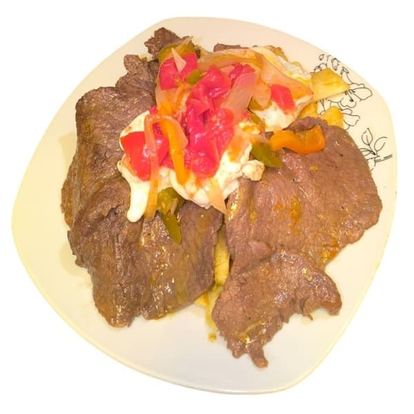
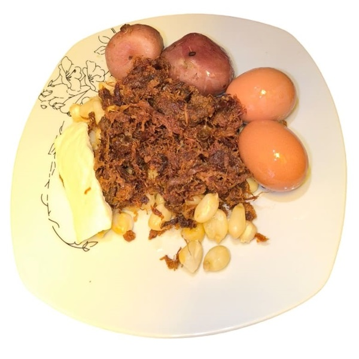
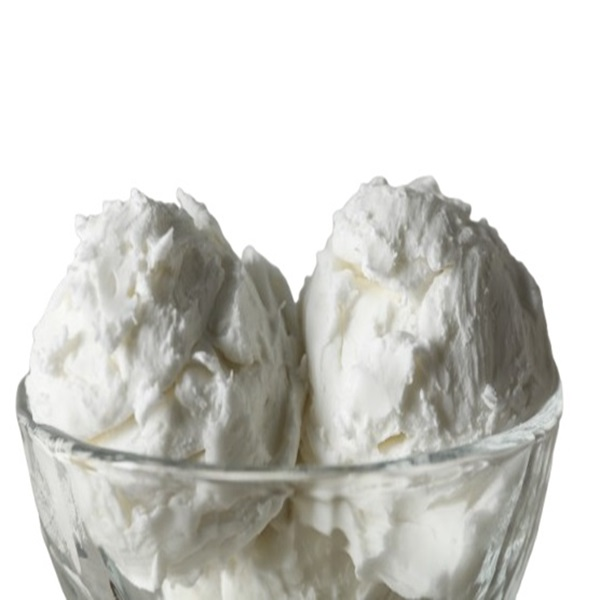

Fun fact about Bolivia!
Bolivia has over 4,000 different types of potatoes, and they are a vital part of Bolivian gastronomy. Almost every traditional dish includes potatoes in some form, and there are even dishes that feature both fresh and freeze-dried potatoes together!
On this page, you will discover the recipe for a beloved Bolivian starter, two traditional main dishes, and a tasteful dessert. We invite you to explore these culinary treasures and immerse yourself in this flavourful experience.
Recipes:



